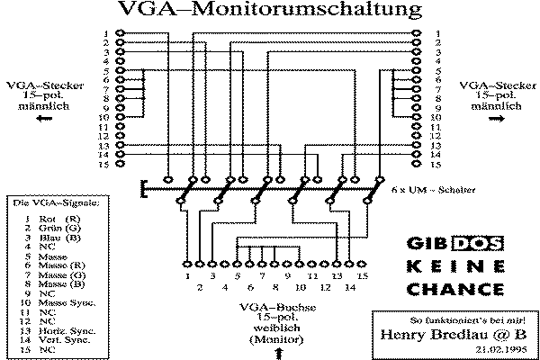

|
|
18.9 VGA-Umschalter
Ein universeller VGA-Umschalter
Ein universeller VGA-Umschalter für normale VGA-Displays.
Benutzen Sie diesen Umschalter nur als reinen VGA-Umschalter!
Abbildung 1 - Ein normaler VGA-Umschalter
Die Farbsignale R,G,B sind ihrer Farbe entsprechen eingezeichnet.
Horizontal-Sync. und Vertikal-Sync. sind ebenfalls farblich markiert.
GND, die schwarze Leitung, ist hier als eine einzige Verbindung
gezeichnet, der Einfachheit halber. Verwenden Sie bei der Herstellung
dieses Umschalters nur abgeschirmte Steuerleitung. Verbinden Sie den
Kabelschirm stets einseitig mit GND. In diesem Fall ist es
günstig das auf der Computerseite, also VGA-IN, zu erledigen.
Verwenden Sie nicht wie hier gezeichnet, nur eine einzige GND-Leitung
zwischen den Anschlußbuchsen des Umschalters. Um
Bildinterferenzen zu vermeiden sollten Sie die VGA Pin 6,7,8,9 und 10
stets mit einer separaten Massleitung verschalten. Nur so kann ein
störungsfreier Betrieb der Umschaltbox erreicht werden.
Kommen Bildschirme mit einer sehr hohen Bildwiederholfrequenz zum
Einsatz sollten auch die einzelnen Signalleitungen innerhalb der
Umschaltbox abgeschirmt werden. Man verhindert so wirkungsvoll ein
Übersprechen der Signalleitungen. Es kommt so nicht mehr zu einer
wechselseitigen Beeinflussung der Leitungen. Schlieren, Schatten in
den Bilddarstellungen sollten so der Vergangenheit angehören.
Angeregt durch eine User-Anfrage, habe ich mir heute mal die
Mühe gemacht, und eine Zeichnung für eine 15-polige
VGA-Monitorumschaltung erstellt. Bei mir funktioniert die Umschaltung
einwandfrei, ich benutze sie an meinem ATARI TT030 um zwischen
ATARI-VGA- Ausgangsbuchse und Grafikkartenausgang (CRAZY DOTS II) den
NEC 4FG - Multisyncmonitor hin und her zu schalten.
 Abbildung 2 - Noch ein VGA-Umschalter
Für eventuelle Schäden, die durch die hier angebene
Schaltung entstehen, kann ich selbstverständlich keine Haftung
übernehmen.
Henry Bredlau @ B (Maus Berlin)
|

|
|